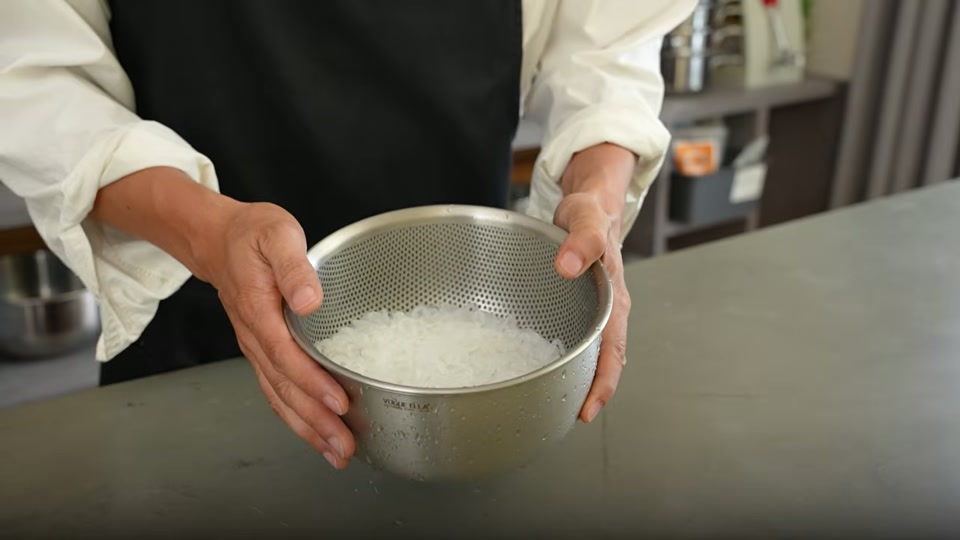
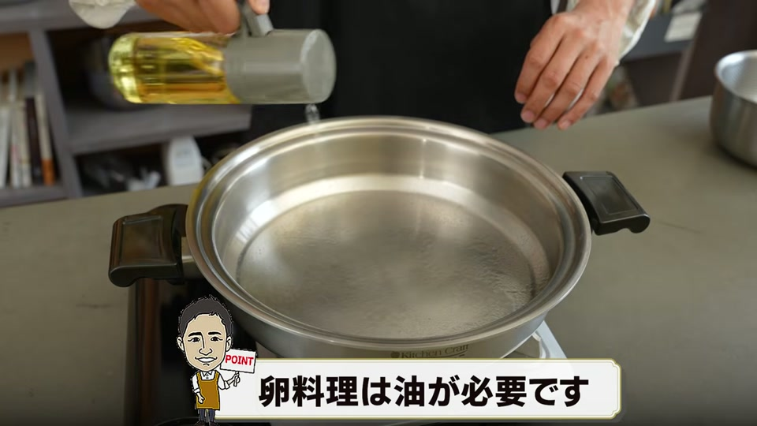
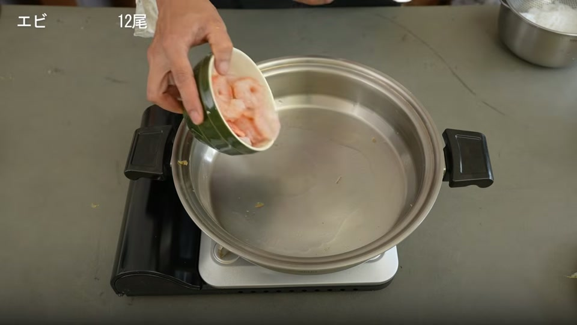
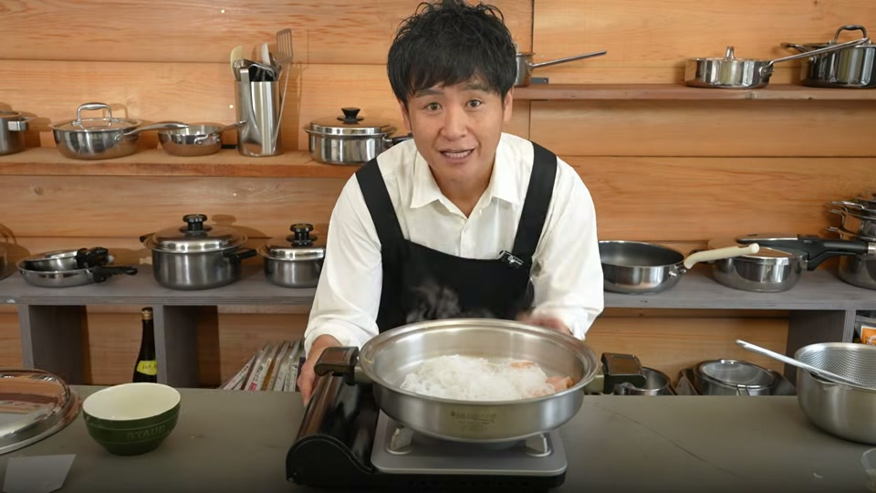
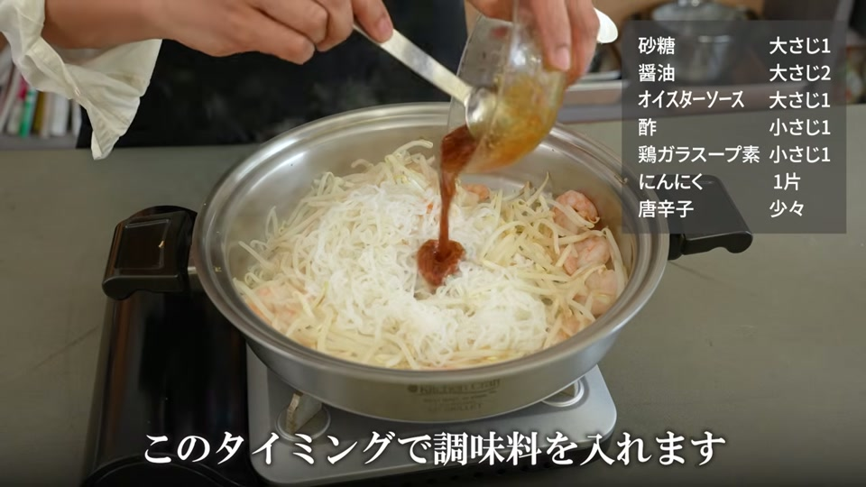
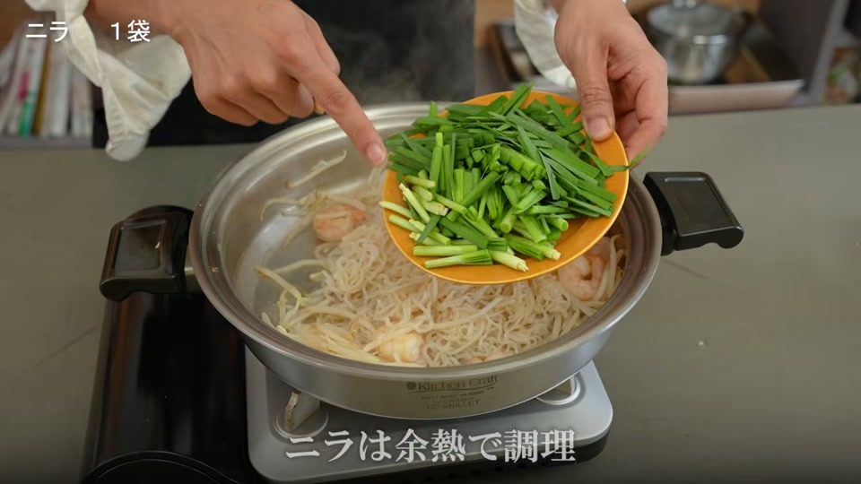
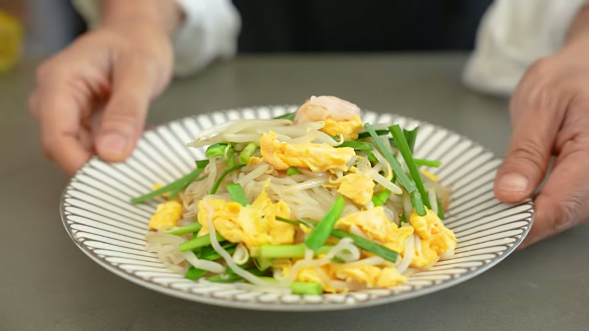

「ダイエット中にパッタイのような本格麺料理が食べたいけれど、糖質やカロリーが気になる…」 「ナンプラーを買っても使い切れずに余らせてしまう…」
そんな悩みをお持ちの方におすすめなのが、米粉麺の代わりに「糸こんにゃく」を使い、身近な調味料だけで作るヘルシーパッタイです。
ナンプラーを使わなくても、ご家庭にある醤油やオイスターソース、仕上げのレモンを活用することで、満足感たっぷりの日本人好みのアジアン風パッタイが完成します。
この記事では、失敗しない「こんにゃくパッタイ」の作り方と、食材をくっつけずに美味しく仕上げる調理のポイントを分かりやすく解説します。
ダイエットの強い味方！糸こんにゃくで作る「ナンプラーなし」ヘルシーパッタイとは？

タイの定番焼きそば「パッタイ」は通常、米粉でできた麺（センレックなど）を使いますが、糖質量が気になることもあります。そこで米粉麺を「糸こんにゃく」に置き換えることで、カロリーと糖質を大幅にカットできます。
また、エスニック料理でよく使われるナンプラーを用意しなくても、醤油・オイスターソース・酢・砂糖・鶏ガラスープの素といった基本の調味料で十分に本格的な味付けが可能です。最後にレモンをしっかり絞ることで、爽やかな酸味が全体を引き締め、ナンプラーなしでも本格的な風味を楽しめます。
材料と調味料一覧｜特別なエスニック調味料は一切不要！

ご家庭にある食材と調味料で簡単に揃えられます。
主な材料（目安）
- 糸こんにゃく：2袋
- もやし：1袋
- ニラ：1袋
- むきエビ：12尾
- 卵：2個
- にんにく（すりおろし）：1片分
- レモン：適量（仕上げ用）
調味料
- 醤油：大さじ2
- オイスターソース：大さじ1
- 酢：小さじ1
- 砂糖：大さじ1
- 鶏ガラスープの素：小さじ1
失敗しない！こんにゃくパッタイの簡単作り方ステップ

1. 下準備（糸こんにゃくの洗い・水切りと具材カット）
- 糸こんにゃくは下茹で不要です。浄水などのきれいな水でさっと洗い、ザルにあげてしっかりと水切りをしておきます（水分をしっかり切るのが味しみを良くするコツです）。
- ニラは食べやすい長さにカットします。
2. 卵の調理と取り出し
- フライパン（ステンレス鍋）をしっかりと予熱し、油を馴染ませます。
- 溶き卵（2個分）を流し込み、さっと炒めて半熟状の炒り卵を作ったら、一旦お皿に取り出しておきます。
3. エビとこんにゃくの炒め方（くっつかない炒め方のコツ）
- 同じフライパンにすりおろしにんにくとむきエビ、しっかりと水切りした糸こんにゃくを投入します。
- ポイント： ステンレス鍋などで炒める際は、一生懸命混ぜ続けず、具材を鍋全体に広げて少し置く（放置する）ように加熱します。混ぜすぎないことで余計な油を吸わず、食材が鍋にくっつきにくくなります。
- こんにゃくの水分が飛んできたら、もやしを加えてさらに炒めます。
4. 調味料の投入と余熱でのニラ・卵仕上げ
- 全体的に火が通ったら、あらかじめ合わせておいた調味料（醤油、オイスターソース、酢、砂糖、鶏ガラスープの素）を一気に回し入れます。
- 調味料が全体に絡んだら火を止めます。
- 取り出しておいた炒り卵とニラを加え、火を消したあとの余熱でサッとあえるだけでOKです。余熱で加熱することでニラのシャキシャキ感が残り、色鮮やかに仕上がります。
- お皿に盛り付け、召し上がる直前にレモンをたっぷり絞って完成です！
ステンレス鍋を使うメリット｜エビがプリプリに仕上がる理由

ステンレス鍋は熱伝導が均一で蓄熱性が高いため、食材にじっくり均一に熱を通すことができます。
パッタイ作りにおいてステンレス鍋を活用すると、以下のメリットがあります。
- エビが縮まずプリプリに仕上がる：均一な加熱により、水分を逃さず旨味を閉じ込めます。
- 「混ぜすぎない」ことでくっつきを防止：しっかり予熱して具材を広げて待つ調理法により、油分を過剰に使わずにくっつかず香ばしく炒められます。
パッタイ作りでよくある質問（FAQ）

Q1. ナンプラーがなくてもパッタイ風の味になりますか？
A. はい、十分に美味しいパッタイ風に仕上がります。醤油やオイスターソースのコクに、酢と砂糖で甘酸っぱさを加え、仕上げにレモン果汁を絞ることで、アジアンテイストの爽やかな味わいが表現できます。
Q2. 糸こんにゃくは事前にアク抜きや下茹でが必要ですか？
A. 最近の糸こんにゃくは臭みが少ないものが多いため、きれいな水でさっと洗って水気をしっかり切るだけでそのまま使用して問題ありません。
Q3. こんにゃくを炒めるときに鍋にくっついてしまうのですがどうすればいいですか？
A. フライパンをあらかじめしっかり予熱してから油を引くことが大切です。また、具材を入れた後に何度も激しく混ぜすぎず、全体に広げて少し置くように火を通すとくっつきにくくなります。
動画で紹介されているアイテム・サービス

今回のレシピ動画内で使用・紹介されている商品および関連サービスです。
- キッチンクラフト Lスキレット（26.8cm）
- 熱伝導に優れたステンレス製フライパン。具材をふっくら美味しく炒め上げます。
- 大澤チャンネル 公式Instagram
- ステンレス鍋を活用したレシピやお手入れのコツを発信中。
- 大澤チャンネル オリジナル商品サイト
- ステンレス菜箸や鍋磨き用ブラシなどのオリジナルキッチングッズを販売。
- 安全な浄水器「Re」
- 糸こんにゃくの洗浄など調理全般に使われている浄水器。
- ヘンケルス オールステンレス包丁
- 動画内で使用されている衛生的なオールステンレス製の包丁。
- 各種おすすめ調味料（美濃三年酢、ピンクの塩、岐阜の3年みりん等）
- 酵素玄米炊飯器
まとめ

糸こんにゃくを使ったパッタイは、低糖質・低カロリーでありながら満腹感もしっかり得られる最高のダイエットレシピです。
- 麺を糸こんにゃくに置き換えて大幅糖質オフ
- ナンプラー不要！家にある醤油やオイスターソース＋レモンで本格味
- ニラは火を止めてからの余熱調理でシャキシャキに
- ステンレス鍋なら「広げて混ぜすぎない」のがくっつかないコツ
特別な材料を買う必要がないため、思い立った時にすぐ作れるのも嬉しいポイントです。ぜひ今夜のメニューに取り入れて、ヘルシーで美味しいパッタイを楽しんでみてください！